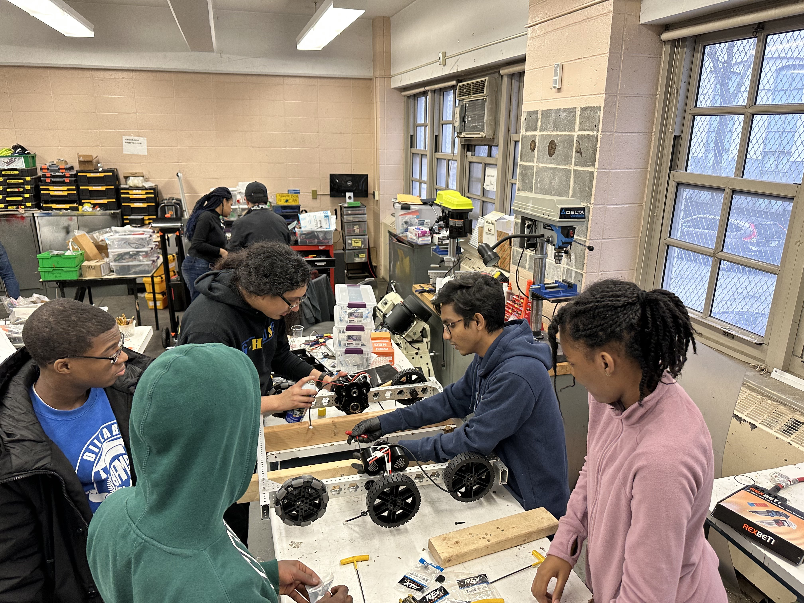
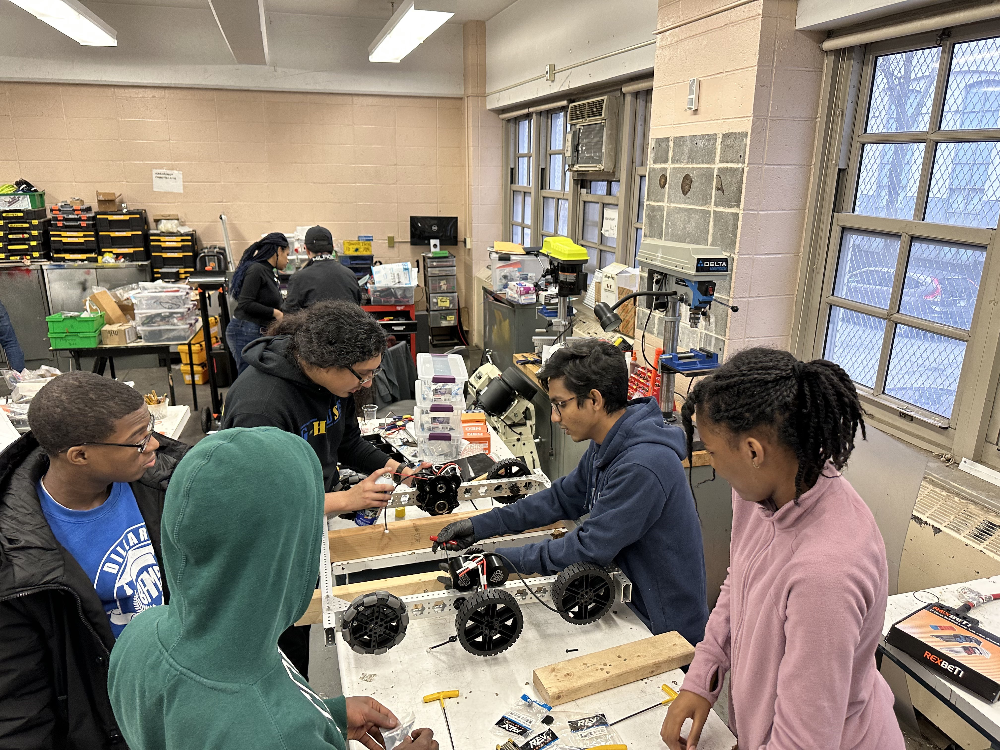

For 2023 we are working on training brand new studends on building the next competition robot that we are planing to use and also getting them used to working with power tools and teaching them way more.


Robotics it is one of the extra activities that i do a lot on my free time and very active in too.
Being an active member of FIRST Robotics Competition Team 354 G-House Pirates during competition of 2022 which was one of the most
difficult years for our team since we had only two
students who where working on the robots and also being on a different room that didnt have that much space since the team got
kicked out of their old room so they had to use what we had for that year.
For 2023 we are working on training brand new studends on building the next competition robot that we are planing to use and also
getting them used to working with power tools and teaching them way more.
